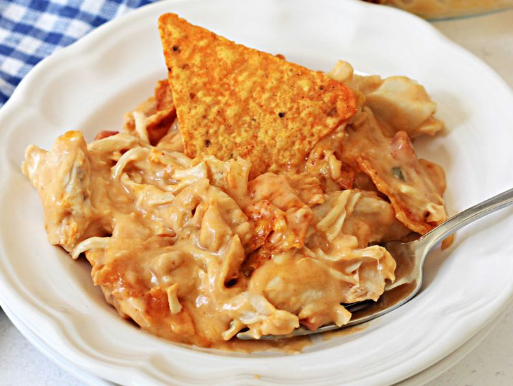

Doritos Chicken Casserole
Home

Description
I was given this Dorito chicken casserole recipe by a co-worker.
My husband says: "You had me at Doritos!"
Ingredients
- Cooking spray
- 1 package nacho cheese-flavored tortilla chips
(such as Doritos), crushed
- 3 cups chopped cooked chicken
- 2 cups shredded Mexican cheese blend, divided
- 1 ½ cups salsa
- 1 (15.25 ounce) can corn, drained
- 1 (10.5 ounce) can condensed cream of mushroom soup
- 1 (10.5 ounce) can condensed cream of chicken soup
- 8 ounces sour cream
Steps
- Preheat the oven to 350 degrees F (175 degrees C).
Lightly spray a 9x13-inch baking dish with cooking spray.
- Spread crushed chips out on the bottom of the prepared baking dish.
- Stir chicken, 1 cup cheese, salsa, corn, condensed soups, and sour cream together in a bowl.
Pour chicken mixture over crushed chips into the baking dish.
- Bake in the preheated oven for 20 minutes.
Spread remaining 1 cup cheese over the casserole and bake until cheese is melted and bubbling,
about 5 minutes more.